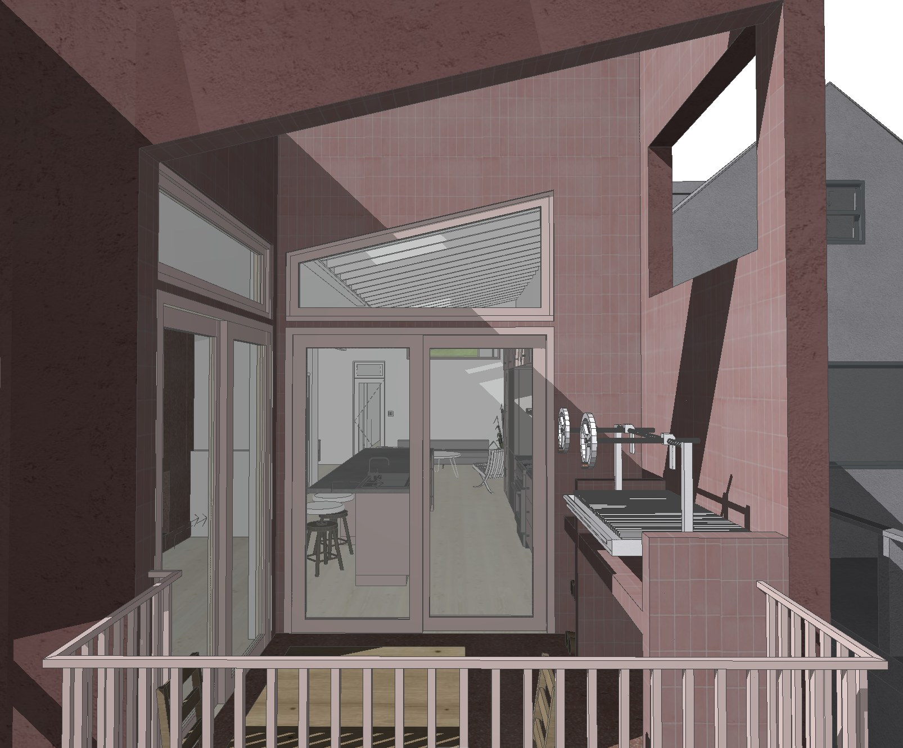
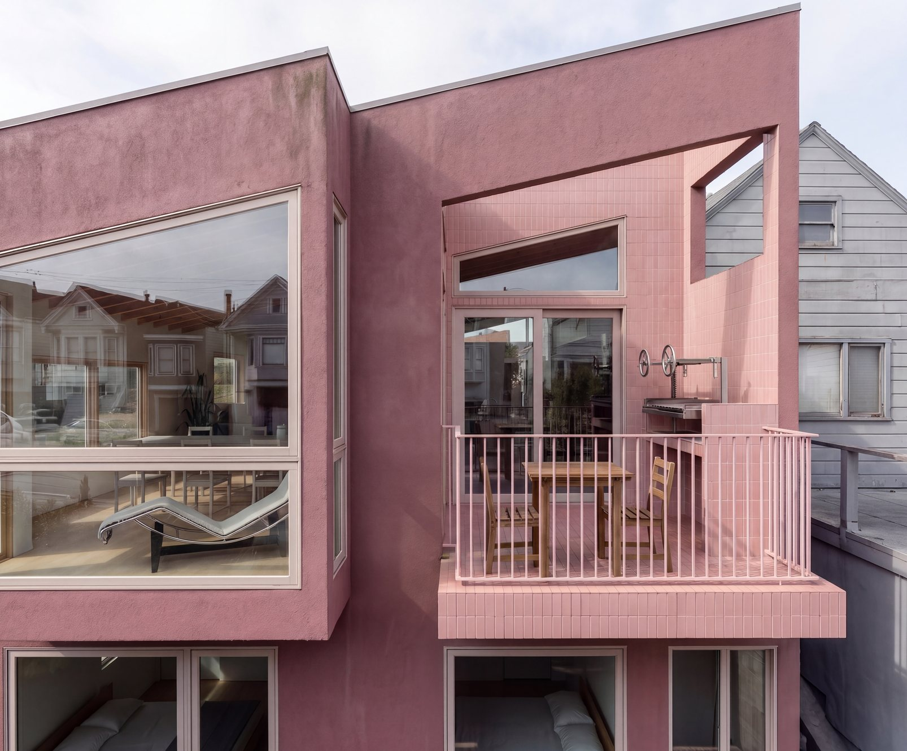
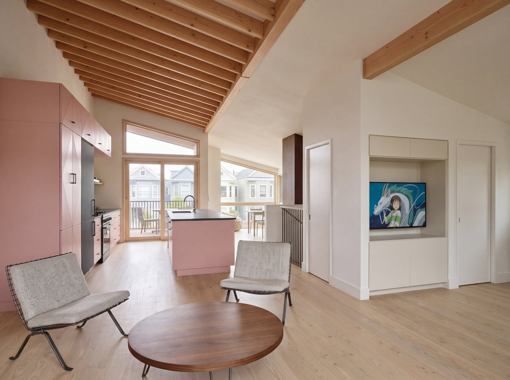
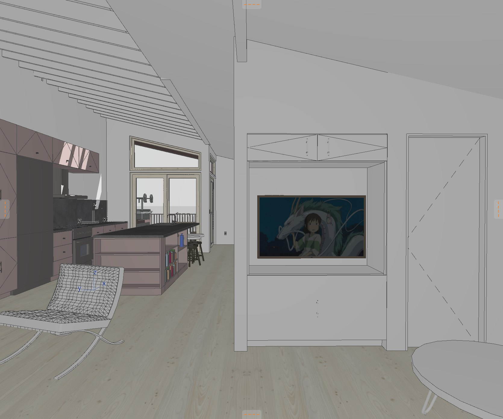

The kitchen, the seating area and the stair all share one room under a sloped ceiling. I left the fir joists exposed and painted the kitchen pink, so the cabinets and the beams are the two things you notice first.
Project 02
Southern San Francisco home for a family of 3


- Location
- Southern San Francisco
- For
- A family of 3
- Spaces
- Kitchen · Living
The finished room

The pink cabinets have a diamond pattern cut into the fronts. The counters are dark stone, and the floor is pale oak. A rug in rust and cream marks out the seating area. Wood-framed doors open from the kitchen to a small deck facing the street.
From the model
I modeled the room first to check the ceiling slope against the tall cabinets, and to see how the media niche sits beside the door.

Pieces in the room
The closest match to the lounge chairs I used in the model, plus the pieces that were made for this room.
- Lounge chairs
- Barcelona chair, by Ludwig Mies van der RoheView at Knoll
- Kitchen cabinets
- Pink fronts with a routed diamond patternMade for this room
- Media wall
- Built-in niche with cabinets above and belowMade for this room